Obsah
cos()
sin()
tan()
Sinus, kosinus
Sínus a kosínus sú periodické funkcie s najmenšou periódou 2π, stačí nájsť graf daných funkcií na intervale 〈0; 2π〉.
Sínus
Začneme najskôr grafom funkcie sínus. Funkčné hodnoty nebudeme počítať, ale získame ich graficky z jednotkovej kružnice pre dostatočný počet hodnôt argumentu x. Jednotkovú kružnicu rozdelíme na 24 rovnakých častí, ktorým bude odpovedať 24 hodnôt argumentu z intervalu 〈0; 2π〉. Celá kružnica predstavuje oblúk dĺžky 2π. Rozdelením na 24 rovnakých častí získame oblúky, z ktorých každý má dĺžku 2π/24 . Geometricky to znamená rozdeliť stredový uhol po 15°. Hodnoty y-ových súradníc prenesieme do grafu k odpovedajúcim argumentom x.
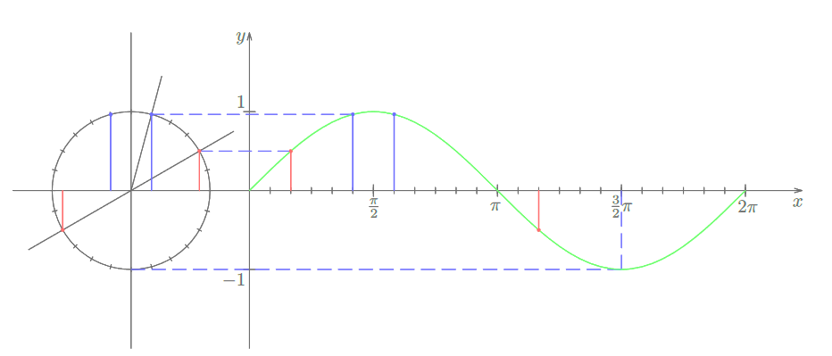Interaktívne zobrazenie
Graf funkcie sínus nazývame sínusoida.
Kosínus
Graf funkcie kosínus sa nazýva kosínusoida. Získame ho podobným spôsobom, prenášať však budeme x-ové súradnice bodov, tak ako je to ukázané na obrázku.
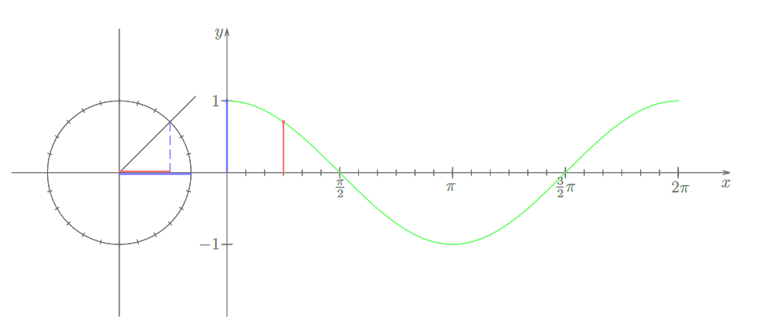Kosínusoida vznikla posunutím sínusoidy v smere zápornej polosi x o π. Potom, ale graf funkcie y = cos(x) môžeme chápať ako graf funkcie sínus. Argumentom však bude výraz premennej x. Ten zohľadní, že pri posunutí y = sin(x) nadobudne nová funkcia svoje hodnoty o π/2 skôr.
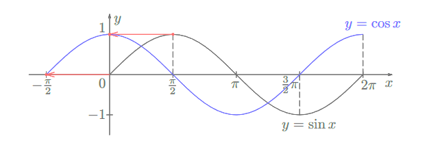teda cos(x) = sin(x + π/2)
Vlastnosti funkcií sínus a kosínus
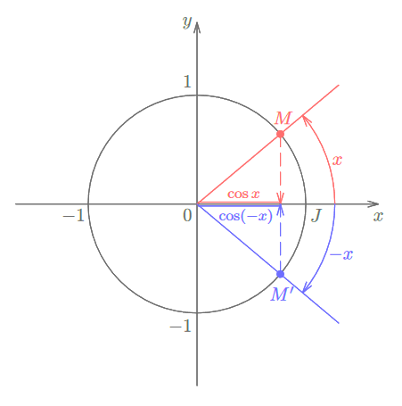Funkcia kosínus je párna, lebo x-ové súradnice bodov sú rovnaké. Platí cos(-x) = cos(x).
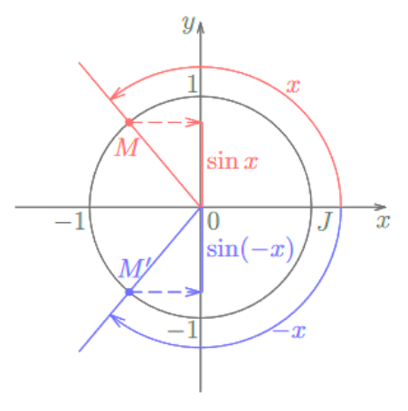sin x a sin(-x) majú rovnakú veľkosť, líšia sa však znamienkom. Aj teraz je obrázok symetrický poľa osi x. Funkcia sínus je teda nepárna. Platí sin(-x) = -sin(x).
Vzťahy
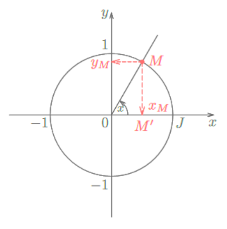Podľa Pytagorovej vety môžeme z obrázku písať:
Pre strany trojuholníka platí podľa Pytagorovej vety vzťah (OM')2 + (M'M)2 = (OM)2. Dosadíme vyjadrenia strán a máme cos(x)2 + sin(x)2 = 1.
Tangens, kotangens
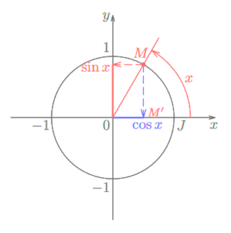|OM'| = cos(x)
|MM'| = sin(x)
Tangens je pomer protiľahlej ku priľahlej odvesne a kotangens naopak. Zapíšeme to vzťahmi tan(x) = |M'M| / |OM'| = sin(x) / cos(x) a cot(x) = |M'O| / |MM'| = cos(x) / sin(x)
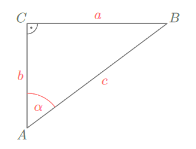sin(α) = a/c
cos(α) = b/c
tan(α) = a/b
cot(α) = b/a
Definícia funkcií tangens a kotangens je v algebrickom tvare, ale obe funkcie možno interpretovať aj geometricky pomocou jednotkovej kružnice. Reálnemu číslu x priradíme na jednotkovej kružnici známym spôsobom bod M. Zostrojíme dotyčnicu p ku kružnici v bode J [1; 0]. Priesečník dotyčnice a polpriamky OM je bod P. y-ová súradnica bodu P je tan(x).
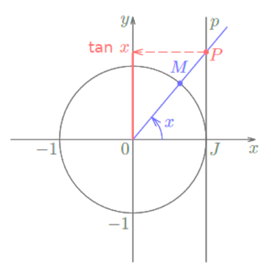Ak chceme určiť tan(π/2), máme:
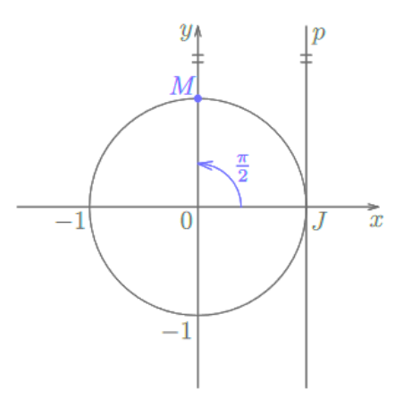dotyčnica p a priamka OM sú rovnobežné. Nemajú spoločný bod P, ktorého y-ová súradnica má vyjadrovať tan(π/2). Teda číslo π/2 nepatrí do definičného oboru funkcie tangens.
Graf funkcie tangens
Funkčné hodnoty pre tangens sú určené y-ovou súradnicou priesečníka priamky OM a dotyčnice p ku kružnici v bode J [1; 0]. Bod M na jednotkovej kružnici je priradený známym spôsobom reálnemu číslu x.
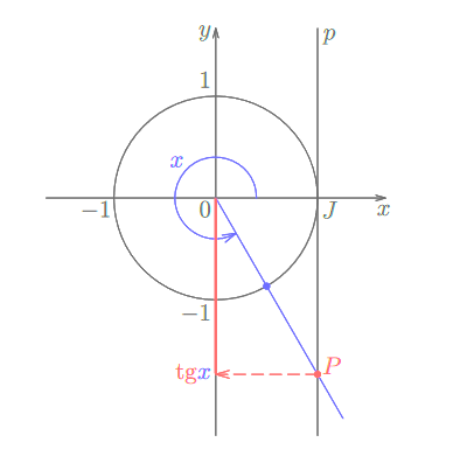 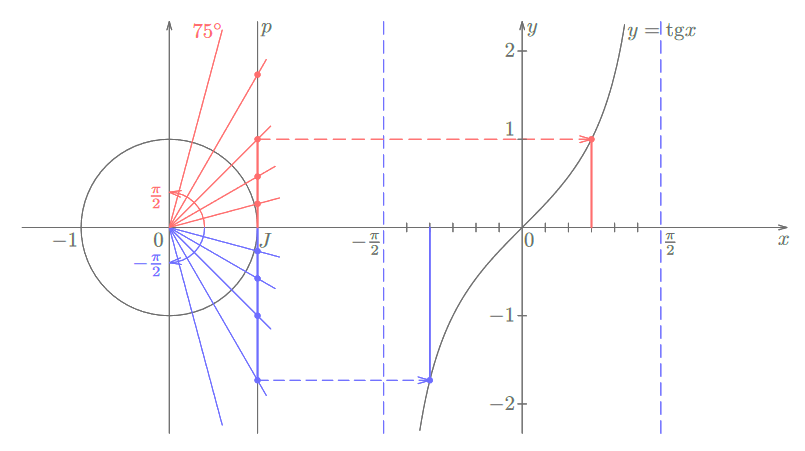Výsledný graf pre funkciu tangens dostaneme, ak získanú časť zopakujeme na každom intervale (−π/2 + kπ; π/2 + kπ) pre všetky celé čísla k.
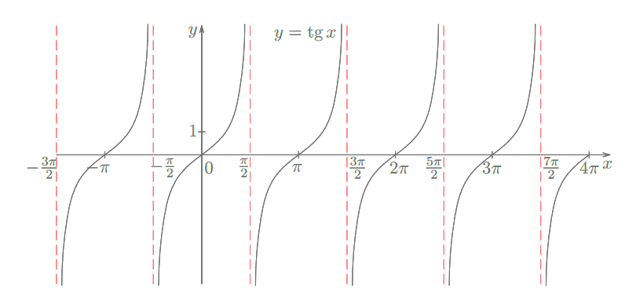Priamky vyznačené čiarkovane červenou farbou sú asymptoty grafu funkcie tangens a sú nutnou súčasťou grafu. Ich predpis je x = (2k + 1)π/2, kde k je celé číslo, lebo funkcia tangens nie je pre tieto hodnoty x definovaná. Graf funkcie tangens nazývame tangentoida.
Graf funkcie kotangens
Podobným spôsobom sa môžeme dopracovať ku grafu funkcie kotangens. Pripomeň, ako na základe jednotkovej kružnice odčítame hodnotu kotangensu. Sú to x-ové súradnice bodov, ktoré získame ako priesečníky dotyčnice ku kružnici v bode K [0; 1] a koncového ramena uhla, ktorý odpovedá hodnote x.
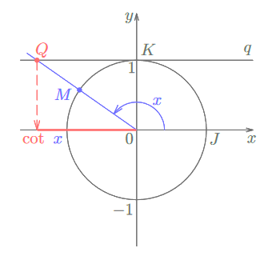 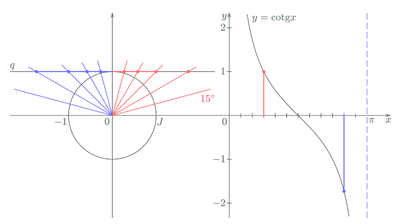Ak zostrojíme takú istú krivku na každom intervale (0 + kπ; π + kπ), kde k je celé číslo, dostaneme výsledný graf funkcie kotangens, ktorý nazývame kotangentoida.
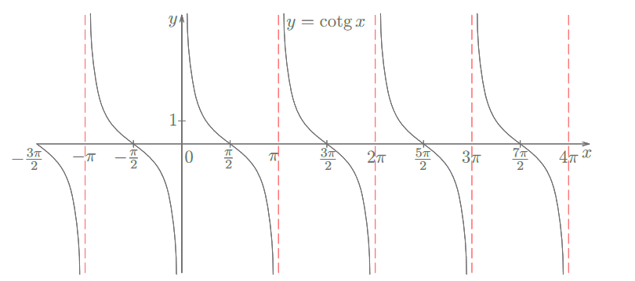Aj k tomu grafu patria asymptoty, na obrázku vyznačené opäť čiarkovane červenou farbou. Ich predpis bude x = kπ, kde k je celé číslo, lebo reálne čísla kπ nepatria do definičného oboru funkcie kotangens.
Vzťahy
tan(x) = sin(x) / cos(x)
cot(x) = cos(x) / sin(x)
tan(x) × cot(x) = (sin(x) / cos(x)) × (cos(x) / sin(x)) = 1
posledný vzťah platí pre všetky reálne čísla, okrem celočíselných násobkov čísla π/2.